Di Lab ini terdapat Perpustakaan yang dapat digunakan oleh mahasiswa, isinya lengkap terdapa komputer buku-buku bahasa pemrograman dan lainnya untuk menambah ilmu para mahasiswa/mahasiswinya.
Fasilitas Yang dimiliki Universitas Ini sangatlah banyak dan berteknologi terbaru. Setiap Ruangan seperti Lab telah di fasilitasi dengan komputer, wifi, Tv LED dan juga terdapat Air Conditioner di setiap ruangannya. Terdapat Lab Multimedia dan Gedung serba guna yang dapat digunakan oleh mahasiswa/mahasiswinya.
Prestasi
Punya segudang prestasi
Universitas Teknokrat Indonesia mencatat sederet prestasi. Salah satunya, pada tahun 2019, rektor kampus ini Dr. HM. Nasrullah Yusuf, SE, MBA, meraih penghargaan sebagai Rektor Terbaik Bidang Inovasi dan Prestasi Nasional dari Lembaga Layanan Pendidikan Tinggi (LLDIKTI) Wilayah II.
Nah, kalau rektornya saja sudah terbukti kualitasnya, prestasi mahasiswanya juga gak perlu diragukan lagi. Prestasi yang diraih mahasiswa pada tahun 2019 antara lain Juara 1 Robot Kapal Selam Indonesia. Masih di tahun yang sama, mahasiswa Universitas Teknokrat Indonesia menyabet Juara 3 tingkat ASEAN dalam kompetisi The 3rd ASEAN MATE Underwater Robot Competition, KONI di Jawa Timur.
Prestasi kampus ini memang sangat lengkap, hampir dari seluruh bidang program studi seperti teknologi, seni, bahasa, dan olahraga. Prestasi di bidang bahasa yang pernah di dapat misalnya menjadi Juara Nasional 1 News Casting ALSA ’19 pada tahun 2015 dan Juara 1 Pidato Bahasa Jepang Sumatera tiga tahun berturut-turut, yaitu tahun 2013-2015.
Selain itu, mahasiswa UTI juga pernah menjadi Juara Asia II Pidato Bahasa Inggris ASEAN English Olympic pada tahun 2014. Prestasi bahasa bukan cuma dari pidato saja, tetapi dari debat bahasa Inggris melalui Kejuaraan Dunia Debat Bahasa Inggris Tingkat Dunia di De La Salle University Filipina pada tahun 2012, 2013, dan 2015.
Selain beberapa prestasi di atas, masih banyak lagi lho, prestasi lainnya. Misalnya saja Penghargaan Teknologi Kreatif Kompas Gramedia Awards, Juara Paduan Suara Bali International Choir Festival, dan predikat The National ICT’s Smartest Campus Award pada tahun 2013.
Fakultas & Program Studi
FTIK
Faculty of Engineering and Computer Sciences
S1 - Information System
S1 - Information Technology
S1 - Electrical Engineering
S1 - Computer Engineering
S1 - Civil Engineering
S1 - Informatics
D3 - Accounting Information System
FEB
Faculty of Economics and Business
S1 - Accounting
S1 - Management
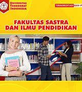
FSIP
Faculty of Arts and Education
S1 - Mathematics Education
S1 - English Education
S1 - Physical Education
S1 - English Literature
Galeri Gedung dan Ruangan
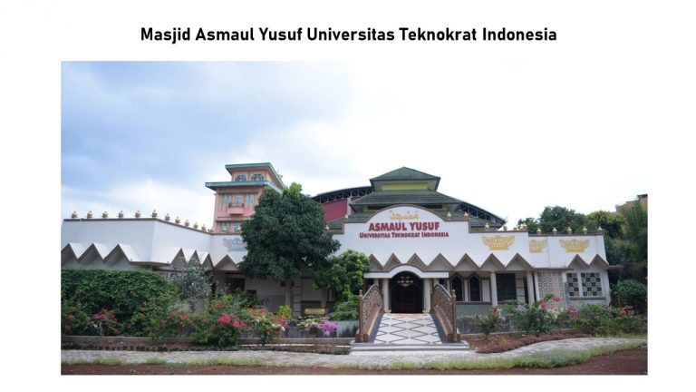
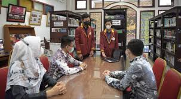
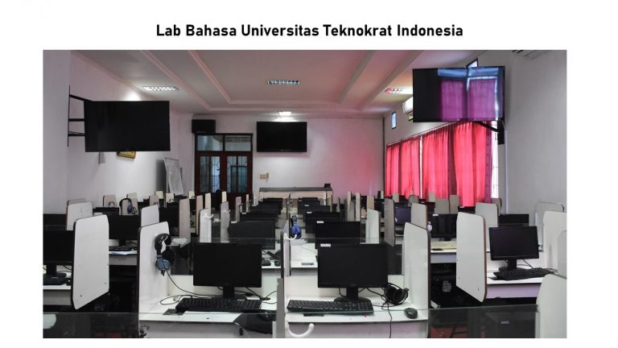
Galeri Kegiatan Kampus
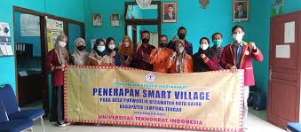
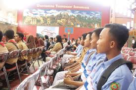
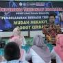
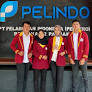
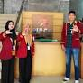
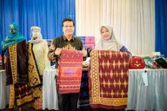
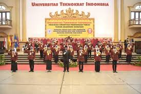
Lokasi
JL.ZA Pagar Alam No.9-11 Labuhan Ratu, kec. Kedaton, Kota Bandar Lampung, Lampung 35132


 HP : 085768746929
HP : 085768746929